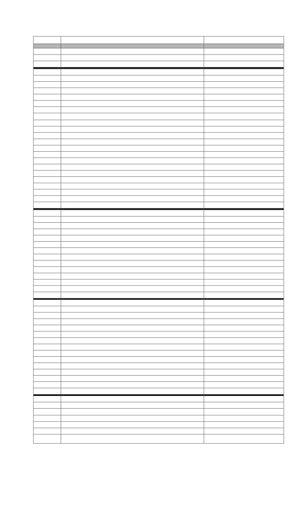

DAERAH OTONOM (PROVINSI, KABUPATEN, DAN KOTA) DI INDONESIA
PER DESEMBER 2013
NO.
NAMA DAERAH OTONOM
IBUKOTA
1
2
3
I.
PROVINSI ACEH
BANDA ACEH
Kabupaten
1 Kabupaten Aceh Barat
Meulaboh
2 Kabupaten Aceh Besar
Jantho
3 Kabupaten Aceh Selatan
Tapaktuan
4 Kabupaten Aceh Timur
Idi Rayeuk
5 Kabupaten Aceh Tengah
Takengon
6 Kabupaten Aceh Utara
Lhoksukon
7 Kabupaten Pidie
Sigli
8 Kabupaten Aceh Tenggara
Kutacane
9 Kabupaten Aceh Singkil
Singkil
10 Kabupaten Bireuen
Bireun
11 Kabupaten Simeulue
Sinabang
12 Kabupaten Aceh Barat Daya
Blangpidie
13 Kabupaten Aceh Tamiang
Karang Baru
14 Kabupaten Aceh Jaya
Calang
15 Kabupaten Gayo Lues
Blangkejeren
16 Kabupaten Nagan Raya
Suka Makmur
17 Kabupaten Bener Meriah
Simpang Tiga Redelong
18 Kabupaten Pidie Jaya
Meureudu
Kota
19 Kota Banda Aceh
Banda Aceh
20 Kota Sabang
Sabang
21 Kota Lhokseumawe
Lhokseumawe
22 Kota Langsa
Langsa
23 Kota Subulussalam
Subulussalam
II.
PROVINSI SUMATERA UTARA
MEDAN
Kabupaten
1 Kabupaten Asahan
TanjungBalai
2 Kabupaten Deli Serdang
LubukPakam
3 Kabupaten Karo
Kabanjahe
4 Kabupaten Labuhan Batu
RantauPrapat
5 Kabupaten Langkat
Stabat
6 Kabupaten Nias
Gunungsitoli
7 Kabupaten Simalungun
Pematang Raya
8 Kabupaten Tapanuli Selatan
Sipirok
9 Kabupaten Tapanuli Tengah
Pandan
10 Kabupaten Tapanuli Utara
Tarutung
11 Kabupaten Dairi
Sidikalang
12 Kabupaten Mandailing Natal
Panyabungan
13 Kabupaten Toba Samosir
Balige
14 Kabupaten Humbang Hasundutan
Dolok Sanggul
15 Kabupaten Nias Selatan
Teluk Dalam
16 Kabupaten Pakpak Bharat
Salak
17 Kabupaten Samosir
Pangururan
18 Kabupaten Serdang Bedagai
Sei Rampah
19 Kabupaten Batu Bara
Lima Puluh
20 Kabupaten Padang Lawas Utara
Gunung Tua
21 Kabupaten Padang Lawas
Sibuhuan
22 Kabupaten Labuhanbatu Selatan
Kota Pinang
23 Kabupaten Labuhanbatu Utara
AekKanopan
24 Kabupaten Nias Utara
Lolofaoso
25 Kabupaten Nias Barat
Onolimbu
Kota
26 Kota Medan
Medan
27 Kota Pematang Siantar
Pematang Siantar
28 Kota Sibolga
Sibolga
29 Kota Binjai
Binjai
30 Kota Tanjung Balai
Tanjung Balai

NO.
NAMA DAERAH OTONOM
IBUKOTA
1
2
3
31 Kota Tebing Tinggi
Tebing Tinggi
32 Kota Padang Sidempuan
Padang Sidempuan
33 Kota Gunungsitoli
Gunungsitoli
III.
PROVINSI SUMATERA BARAT
PADANG
Kabupaten
1 Kabupaten Agam
Lubuk Besung
2 Kabupaten Lima Puluh Kota
Sarilamak
3 Kabupaten Padang Pariaman
Parit Melintang
4 Kabupaten Pasaman
Lubuk Sikaping
5 Kabupaten Pesisir Selatan
Painan
6 Kabupaten Sijunjung
Sijunjung
7 Kabupaten Solok
Aro-Sukarami
8 Kabupaten Tanah Datar
Batu Sangkar
9 Kabupaten Kepulauan Mentawai
Tua Pejat
10 Kabupaten Dharmasraya
Pulau Punjung
11 Kabupaten Pasaman Barat
Simpang Empat
12 Kabupaten Solok Selatan
Padang Aro
Kota
13 Kota Padangpanjang
Padangpanjang
14 Kota Payakumbuh
Payakumbuh
15 Kota Sawahlunto
Sawahlunto
16 Kota Solok
Solok
17 Kota Bukittinggi
Bukittinggi
18 Kota Padang
Padang
19 Kota Pariaman
Pariaman
IV.
PROVINSI JAMBI
JAMBI
Kabupaten
1 Kabupaten Batang Hari
MuaraBulian
2 Kabupaten Bungo
MuaroBungo
3 Kabupaten Merangin
Bangko
4 Kabupaten Tanjung Jabung Barat
Kuala Tungkal
5 Kabupaten Kerinci
Sungai Penuh
6 Kabupaten Tebo
Tebo
7 Kabupaten Muaro Jambi
Sengiti
8 Kabupaten Sarolangun
Sarolangun
9 Kabupaten Tanjung Jabung Timur
Muarasabak
Kota
10 Kota Jambi
Jambi
11 Kota Sungai Penuh
Sungai Penuh
V.
PROVINSI RIAU
PEKANBARU
Kabupaten
1 Kabupaten Bengkalis
Bengkalis
2 Kabupaten Indragiri Hulu
Rengat
3 Kabupaten Kampar
Kampar
4 Kabupaten Indragiri Hilir
Tembilahan
5 Kabupaten Kuantan Singingi
Teluk Kuantan
6 Kabupaten Pelalawan
Pangkalan Kerinci
7 Kabupaten Rokan Hulu
Pasir Pangaraian
8 Kabupaten Rokan Hilir
Ujung Tanjung
9 Kabupaten Siak
Siak Sri Indrapura
10 Kabupaten Kepulauan Meranti
Selat Panjang
Kota
11 Kota Pekanbaru
Pekanbaru
12 Kota Dumai
Dumai
VI.
PROVINSI KEPULAUAN RIAU
TANJUNG PINANG
Kabupaten
1 Kabupaten Bintan
Bandar Seri Bentan
2 Kabupaten Karimun
Tanjung Balai Karimun
3 Kabupaten Natuna
Ranai
4 Kabupaten Lingga
Daik Lingga
5 Kabupaten Kepulauan Anambas
Siantan
2
NO.
NAMA DAERAH OTONOM
IBUKOTA
1
2
3
Kota
6 Kota Batam
Batam
7 Kota Tanjung Pinang
Tanjung Pinang
VII.
PROVINSI BENGKULU
BENGKULU
Kabupaten
1 Kabupaten Bengkulu Selatan
Teluk Betung
2 Kabupaten Bengkulu Utara
Arga Makmur
3 Kabupaten Rejang Lebong
Curup
4 Kabupaten Kaur
Bintuha
5 Kabupaten Seluma
Tais
6 Kabupaten Muko-Muko
Muko-Muko
7 Kabupaten Kepahiang
Kepahiang
8 Kabupaten Lebong
Tubei
9 Kabupaten Bengkulu Tengah
Karang Tinggi
Kota
10 Kota Bengkulu
Bengkulu
VIII.
PROVINSI SUMATERA SELATAN
PALEMBANG
Kabupaten
1 Kabupaten Lahat
Lahat
2 Kabupaten Muara Enim
MuaraEnim
3 Kabupaten Musi Banyuasin
Sekayu
4 Kabupaten Musi Rawas
MuaraBeliti
5 Kabupaten Ogan Komering Ilir
Kayuagung
6 Kabupaten Ogan Komering Ulu
Baturaja
7 Kabupaten Banyuasin
Pangkalan Balai
8 Kabupaten Ogan Ilir
Indralaya
9 Kabupaten Ogan Komering Ulu Timur
Martapura
10 Kabupaten Ogan Komering Ulu Selatan
Muaradua
11 Kabupaten Empat Lawang
Tebing Tinggi
12 Kabupaten Penukal Abab Lematang Ilir
Talang Ubi
13 Kabupaten Musi Rawas Utara
Muara Rupit
Kota
14 Kota Palembang
Palembang
15 Kota Prabumulih
Prabumulih
16 Kota Lubuk Linggau
Lubuk Linggau
17 Kota Pagar Alam
PagarAlam
IX.
PROVINSI BANGKA BELITUNG
PANGKAL PINANG
Kabupaten
1 Kabupaten Bangka
Sungailiat
2 Kabupaten Belitung
Tanjungpandan
3 Kabupaten Bangka Barat
Mentok
4 Kabupaten Bangka Tengah
Koba
5 Kabupaten Bangka Selatan
Toboali
6 Kabupaten Belitung Timur
Manggar
Kota
7 Kota Pangkal Pinang
Pangkal Pinang
X.
PROVINSI LAMPUNG
BANDAR LAMPUNG
Kabupaten
1 Kabupaten Lampung Selatan
Teluk Betung
2 Kabupaten Lampung Tengah
Gunung Sugih
3 Kabupaten Lampung Utara
Kotabumi
4 Kabupaten Lampung Barat
Lima
5 Kabupaten Tanggamus
Kota Agung
6 Kabupaten Tulang Bawang
Menggala
7 Kabupaten Lampung Timur
Sukadana
8 Kabupaten Way Kanan
Blambangan Umpu
9 Kabupaten Pesawaran
Gedong Tataan
10 KabupatenPringsewu
Pringsewu
11 Kabupaten Mesuji
Sidomulyo
12 Kabupaten Tulang Bawang Barat
Panarangan
13 Kabupaten Lampung Barat
Krui
3
NO.
NAMA DAERAH OTONOM
IBUKOTA
1
2
3
Kabupaten
14 Kota Bandar Lampung
Bandar Lampung
15 Kota Metro
Metro
XI.
PROVINSI BANTEN
SERANG
Kabupaten
1 Kabupaten Lebak
Rangkasbitung
2 Kabupaten Pandeglang
Pandeglang
3 Kabupaten Serang
Serang
4 Kabupaten Tangerang
Tigaraksa
Kota
5 Kota Tangerang
Tangerang
6 Kota Cilegon
Cilegon
7 Kota Serang
Serang
8 Kota Tangerang Selatan
Tangerang Selatan
XII.
PROVINSI DKI JAKARTA
JAKARTA
1 Kota AdministratifJakarta Barat
2 Kota Administratif Jakarta Pusat
3 Kota Administratif Jakarta Utara
4 Kota Administratif Jakarta Timur
5 Kota Administratif Jakarta Selatan
6 Kabupaten Administratif Kepulauan Seribu
PulauPramuka
XIII.
PROVINSI JAWA BARAT
BANDUNG
Kabupaten
1 Kabupaten Bandung
Soreang
2 Kabupaten Bekasi
Cikarang
3 Kabupaten Bogor
Cibinong
4 Kabupaten Ciamis
Ciamis
5 Kabupaten Cianjur
Cianjur
6 Kabupaten Cirebon
Sumber
7 Kabupaten Garut
Garut
8 Kabupaten Indramayu
Indramayu
9 Kabupaten Karawang
Karawang
10 Kabupaten Kuningan
Kuningan
11 Kabupaten Majalengka
Majalengka
12 Kabupaten Sukabumi
PelabuhanRatu
13 Kabupaten Sumedang
Sumedang
14 Kabupaten Tasikmalaya
Singaparna
15 Kabupaten Purwakarta
Purwakarta
16 Kabupaten Subang
Subang
17 Kabupaten Bandung Barat
Ngamprah
18 Kabupaten Pangandaran
Parigi
Kota
19 Kota Bandung
Bandung
20 Kota Bogor
Bogor
21 Kota Cirebon
Cirebon
22 Kota Sukabumi
Sukabumi
23 Kota Bekasi
Bekasi
24 Kota Depok
Depok
25 Kota Cimahi
Cimahi
26 Kota Tasikmalaya
Tasikmalaya
27 Kota Banjar
Banjar
XIV.
PROVINSI JAWA TENGAH
SEMARANG
Kabupaten
1 Kabupaten Banjarnegara
Banjarnegara
2 Kabupaten Banyumas
Purwokerto
3 Kabupaten Blora
Blora
4 Kabupaten Boyolali
Boyolali
5 Kabupaten Brebes
Brebes
6 Kabupaten Cilacap
Cilacap
7 Kabupaten Demak
Demak
8 Kabupaten Grobogan
Purwodadi
9 Kabupaten Jepara
Jepara
4
NO.
NAMA DAERAH OTONOM
IBUKOTA
1
2
3
10 Kabupaten Karanganyar
Karanganyar
11 Kabupaten Kebumen
Kebumen
12 Kabupaten Kendal
Kendal
13 Kabupaten Klaten
Klaten
14 Kabupaten Kudus
Kudus
15 Kabupaten Magelang
Mungkid
16 Kabupaten Pati
Pati
17 Kabupaten Pekalongan
Kajen
18 Kabupaten Pemalang
Pemalang
19 Kabupaten Purbalingga
Purbalingga
20 Kabupaten Purworejo
Purworejo
21 Kabupaten Rembang
Rembang
22 Kabupaten Semarang
Ungaran
23 Kabupaten Sragen
Sragen
24 Kabupaten Sukoharjo
Sukoharjo
25 Kabupaten Tegal
Slawi
26 Kabupaten Temanggung
Temanggung
27 Kabupaten Wonogiri
Wonogiri
28 Kabupaten Wonosobo
Wonosobo
29 Kabupaten Batang
Batang
Kota
30 Kota Surakarta
Surakarta
31 Kota Semarang
Semarang
32 Kota Pekalongan
Pekalongan
33 Kota Magelang
Magelang
34 Kota Salatiga
Salatiga
35 Kota Tegal
Tegal
XV.
PROVINSI DI YOGYAKARTA
YOGYAKARTA
Kabupaten
1 Kabupaten Bantul
Bantul
2 Kabupaten Gunung Kidul
Wonosari
3 Kabupaten Sleman
Sleman
4 Kabupaten Kulon Progo
Sentolo
Kota
5 Kota Yogyakarta
Yogyakarta
XVI.
PROVINSI JAWA TIMUR
SURABAYA
Kabupaten
1 Kabupaten Bangkalan
Bangkalan
2 Kabupaten Banyuwangi
Banyuwangi
3 Kabupaten Blitar
Kanigoro
4 Kabupaten Bojonegoro
Bojonegoro
5 Kabupaten Bondowoso
Bondowoso
6 Kabupaten Gresik
Gresik
7 Kabupaten Jember
Jember
8 Kabupaten Jombang
Jombang
9 Kabupaten Kediri
Kediri
10 Kabupaten Lamongan
Lamongan
11 Kabupaten Lumajang
Lumajang
12 Kabupaten Madiun
Caruban
13 Kabupaten Magetan
Magetan
14 Kabupaten Malang
Kepanjen
15 Kabupaten Mojokerto
Mojokerto
16 Kabupaten Nganjuk
Nganjuk
17 Kabupaten Ngawi
Ngawi
18 Kabupaten Pacitan
Pacitan
19 Kabupaten Pamekasan
Pemekasan
20 Kabupaten Pasuruan
Pasuruan
21 Kabupaten Ponorogo
Ponorogo
22 Kabupaten Probolinggo
Kraksaan
23 Kabupaten Sampang
Sampang
24 Kabupaten Sidoarjo
Sidoarjo
25 Kabupaten Situbondo
Situbondo
26 Kabupaten Sumenep
Sumenep
5
NO.
NAMA DAERAH OTONOM
IBUKOTA
1
2
3
27 Kabupaten Trenggalek
Trenggalek
28 Kabupaten Tuban
Tuban
29 Kabupaten Tulungagung
Tulungagung
Kota
30 Kota Kediri
Kediri
31 Kota Madiun
Madiun
32 Kota Malang
Malang
33 Kota Surabaya
Surabaya
34 Kota Mojokerto
Mojokerto
35 Kota Pasuruan
Pasuruan
36 Kota Probolinggo
Probolinggo
37 Kota Blitar
Blitar
38 Kota Batu
Batu
XVII.
PROVINSI BALI
DENPASAR
Kabupaten
1 Kabupaten Badung
Mengwi
2 Kabupaten Bangli
Bangli
3 Kabupaten Buleleng
Singaraja
4 Kabupaten Gianyar
Gianyar
5 Kabupaten Jembrana
Negara
6 Kabupaten Karangasem
Amlapura
7 Kabupaten Klungkung
Klungkung
8 Kabupaten Tabanan
Tabanan
Kota
9 Kota Denpasar
Denpasar
XVIII.
PROVINSI NUSA TENGGARA BARAT
MATARAM
Kabupaten
1. Kabupaten Bima
Woha
2. Kabupaten Dompu
Dompu
3. Kabupaten Lombok Barat
Gerung
4. Kabupaten Lombok Tengah
Praya
5. Kabupaten Lombok Timur
Selong
6. Kabupaten Sumbawa
Sumbawa Besar
7. Kabupaten Sumbawa Barat
Taliwang
8. Kabupaten Lombok Utara
Tanjung
Kota
9. Kota Mataram
Mataram
10. Kota Bima
Bima
XIX.
PROVINSI NUSA TENGGARA TIMUR
KUPANG
Kabupaten
1. Kabupaten Alor
Kalabahi
2. Kabupaten Belu
Atambua
3. Kabupaten Ende
Ende
4. Kabupaten Flores Timur
Larantuka
5. Kabupaten Kupang
Oelamasi
6. Kabupaten Manggarai
Ruteng
7. Kabupaten Ngada
Bajawa
8. Kabupaten Sikka
Maumere
9. Kabupaten Sumba Barat
Waikabubak
10. Kabupaten Sumba Timur
Waingapu
11. Kabupaten Timor Tengah Selatan
Soe
12. Kabupaten Timor Tengah Utara
Kafemanu
13. Kabupaten Lembata
Lewoleba
14. Kabupaten Rote Ndao
Baa
15. Kabupaten Manggarai Barat
Labuan Bajo
16. Kabupaten Manggarai Timur
Borong
17. Kabupaten Nagekeo
Mbay
18. Kabupaten Sumba Barat Daya
Tambolaka
19. Kabupaten Sumba Tengah
Waibakul
20. Kabupaten Sabu Raijua
Mania
21. Kabupaten Malaka
Betun
6
NO.
NAMA DAERAH OTONOM
IBUKOTA
1
2
3
Kota
22. Kota Kupang
Kupang
XX.
PROVINSI KALIMANTAN BARAT
PONTIANAK
Kabupaten
1 Kabupaten Kapuas Hulu
Putusibau
2 Kabupaten Ketapang
Ketapang
3 Kabupaten Pontianak
Mempawah
4 Kabupaten Sambas
Singkawang
5 Kabupaten Sanggau
Sanggau
6 Kabupaten Sintang
Sintang
7 Kabupaten Bengkayang
Bengkayang
8 Kabupaten Landak
Ngabang
9 Kabupaten Melawi
Nanga Pinoh
10 Kabupaten Sekadau
Sekadau
11 Kabupaten Kayong Utara
Sukadana
12 Kabupaten Kubu Raya
Sungai Raya
Kota
13 Kota Pontianak
Pontianak
14 Kota Singkawang
Singkawang
XXI.
PROVINSI KALIMANTAN TENGAH
PALANGKARAYA
Kabupaten
1 Kabupaten Barito Selatan
Buntok
2 Kabupaten Barito Utara
MuaraTeweh
3 Kabupaten Kapuas
Kuala Kapuas
4 Kabupaten Kotawaringin Barat
Pangkalan Bun
5 Kabupaten Kotawaringin Timur
Sampit
6 Kabupaten Barito Timur
Tamiang Layang
7 Kabupaten Gunung Mas
Kuala Kurun
8 Kabupaten Katingan
Kasongan
9 Kabupaten Lamandau
Nanga Bulik
10 Kabupaten Murung Raya
Puruk Cahu
11 Kabupaten Pulang Pisau
Pulang Pisau
12 Kabupaten Sukamara
Sukamara
13 Kabupaten Seruyan
Kuala Pembuang
Kota
14 Kota Palangkaraya
Palangkaraya
XXII.
PROVINSI KALIMANTAN SELATAN
BANJARMASIN
Kabupaten
1 Kabupaten Banjar Baru
Martapura
2 Kabupaten Barito Kuala
Marabahan
3 Kabupaten Hulu Sungai Selatan
Kandangan
4 Kabupaten Hulu Sungai Tengah
Barabai
5 Kabupaten Hulu Sungai Utara
Amuntai
6 Kabupaten Kotabaru
Kotabaru
7 Kabupaten Tanah Laut
Pleihari
8 Kabupaten Tabalong
Tanjung
9 Kabupaten Tapin
Rantau
10 Kabupaten Tanah Bumbu
Batulicin
11 Kabupaten Balangan
Paringin
Kota
12 Kota Banjarmasin
Banjarmasin
13 Kota Banjarbaru
Banjarbaru
XXIII.
PROVINSI KALIMANTAN TIMUR
SAMARINDA
Kabupaten
1 Kabupaten Berau
Tanjung Redep
2 Kabupaten Kutai Kartanegara
Tenggarong
3 Kabupaten Paser
Tana Paser
4 Kabupaten Kutai Barat
Sendawar
5 Kabupaten Kutai Timur
Sanggata
6 Kabupaten Penajam Paser Utara
Penajam
7 Kabupaten Mahakam Ulu
Long Bagun
7
NO.
NAMA DAERAH OTONOM
IBUKOTA
1
2
3
Kota
8 Kota Balikpapan
Balikpapan
9 Kota Samarinda
Samarinda
10 Kota Bontang
Bontang
XXIV.
PROVINSI KALIMANTAN UTARA
TANJUNG SELOR
Kabupaten
1 Kabupaten Bulungan
Tanjung Selor
2 Kabupaten Malinau
Malinau
3 Kabupaten Nunukan
Nunukan
4 Kabupaten Tana Tidung
Tideng Pale
Kota
5 Kota Tarakan
Tarakan
XXV.
PROVINSI SULAWESI UTARA
MANADO
Kabupaten
1. Kabupaten Bolaang Mongondow
Lolak
2. Kabupaten Kepulauan Sangihe
Tahuna
3. Kabupaten Minahasa
Tondano
4. Kabupaten Kepulauan Talaud
Melonguane
5. Kabupaten Minahasa Selatan
Amurang
6. Kabupaten Minahasa Utara
Airmadidi
7. Kabupaten Minahasa Tenggara
Ratahan
8. Kabupaten Kepulauan Siau Tagulandang Biaro
Ondong Siau
9. Kabupaten Bolaang Mongondow Utara
Boroko
10. Kabupaten Bolaang MongondowTimur
Tutuyan
11. Kabupaten Bolaang Mongondow Selatan
BolangUki
Kota
12. Kota Manado
Manado
13. Kota Bitung
Bitung
14. Kota Tomohon
Tomohon
15. Kota Kotamobagu
Kotamobagu
XXVI.
PROVINSI GORONTALO
GORONTALO
Kabupaten
1. Kabupaten Gorontalo
Limboto
2. Kabupaten Boalemo
Tilamuta
3. Kabupaten Bone Bolango
Suwawa
4. Kabupaten Pohuwato
Marisa
5. Kabupaten Gorontalo Utara
Kwandang
Kota
6. Kota Gorontalo
Gorontalo
XXVII.
PROVINSI SULAWESI TENGAH
PALU
Kabupaten
1. Kabupaten Banggai
Luwuk
2. Kabupaten Donggala
Benawa
3. Kabupaten Poso
Poso
4. Kabupaten Toli-Toli
Toil-Toli
5. Kabupaten Banggai Kepulauan
Salakan
6. Kabupaten Buol
Buol
7. Kabupaten Morowali
Bungku
8. Kabupaten Parigi Moutong
Parigi
9. Kabupaten Tojo Una-Una
Ampana
10. Kabupaten Sigi
SigiBiromaru
11. Kabupaten Banggai Laut
Banggai
12. Kabupaten Morowali Utara
Kolonodale
Kota
13. Kota Palu
Palu
XXVIII.
PROVINSI SULAWESI BARAT
MAMUJU
Kabupaten
1. Kabupaten Majene
Majene
2. Kabupaten Mamuju
Mamuju
3. Kabupaten Polewali Mandar
Polewali
4. Kabupaten Mamasa
Mamasa
5. Kabupaten Mamuju Utara
Pasangkayu
8
NO.
NAMA DAERAH OTONOM
IBUKOTA
1
2
3
6. Kabupaten Mamuju Tengah
Tobadak
XXIX.
PROVINSI SULAWESI SELATAN
MAKASSAR
Kabupaten
1. Kabupaten Bantaeng
Bantaeng
2. Kabupaten Barru
Barru
3. Kabupaten Bone
Watampone
4. Kabupaten Bulukumba
Bulukumba
5. Kabupaten Enrekang
Enrekang
6. Kabupaten Gowa
Sunggomimasa
7. Kabupaten Jeneponto
Jeneponto
8. Kabupaten Luwu
Belopa
9. Kabupaten Maros
Maros
10. Kabupaten Pangkajene Kepulauan
Pangkajene
11. Kabupaten Pinrang
Pinrang
12. Kabupaten KepulauanSelayar
Benteng
13. Kabupaten Sinjai
Sinjai
14. Kabupaten Sidenreng Rappang
Pangkajene
15. Kabupaten Soppeng
Watansoppeng
16. Kabupaten Takalar
Takalar
17. Kabupaten Tana Toraja
Makale
18. Kabupaten Wajo
Sengkang
19. Kabupaten Luwu Utara
Masamba
20. Kabupaten Luwu Timur
Malili
21. Kabupaten Toraja Utara
Rantepao
Kota
22. Kota Makassar
Makassar
23. Kota Pare-Pare
Pare-Pare
XXX.
PROVINSI SULAWESI TENGGARA
KENDARI
Kabupaten
1. Kabupaten Bombana
Rumbia
2. Kabupaten Buton
PasarWajo
3. Kabupaten Kolaka
Kolaka
4. Kabupaten Konawe
Una Aha
5. Kabupaten Muna
Raha
6. Kabupaten Wakatobi
Wangi-Wangi
7. Kabupaten Kolaka Utara
Lasusua
8. Kabupaten Konawe Selatan
Andolo
9. Kabupaten Konawe Utara
Wanggudu
10. Kabupaten Buton Utara
Buranga
11. Kabupaten Kolaka Timur
Tirawuta
12. Kabupaten Konawe Kepulauan
Langara
Kota
13. Kota Kendari
Kendari
14. Kota Bau-Bau
Bau-Bau
XXXI.
PROVINSI MALUKU
AMBON
Kabupaten
1. Kabupaten Maluku Tengah
Masohi
2. Kabupaten Maluku Tenggara
Langgur
3. Kabupaten Buru
Namlea
4. Kabupaten Maluku Tenggara Barat
Saumlaki
5. Kabupaten Seram Bagian Barat
Dataran Honipopu
6. Kabupaten Seram Bagian Timur
Dataran Hunimoa
7. Kabupaten Kepulauan Aru
Dobo
8. Kabupaten Maluku Barat Daya
Moa
9. Kabupaten Buru Selatan
Namrole
Kota
10. Kota Ambon
Ambon
11. Kota Tual
Tual
XXXII.
PROVINSI MALUKU UTARA
SOFIFI
Kabupaten
1. Kabupaten Halmahera Barat
Jailolo
2. Kabupaten Halmahera Tengah
Soasiu
9
NO.
NAMA DAERAH OTONOM
IBUKOTA
1
2
3
3. Kabupaten Halmahera Selatan
Labuha
4. Kabupaten Halmahera Timur
Maba
5. Kabupaten Halmahera Utara
Tobelo
6. Kabupaten Kepulauan Sula
Sanana
7. Kabupaten Pulau Morotai
Daruba
8. Kabupaten Pulau Taliabu
Bobong
Kota
9. Kota Ternate
Ternate
10. Kota Tidore
Tidore
XXXIII.
PROVINSI PAPUA BARAT
MANOKWARI
Kabupaten
1. Kabupaten Fak-Fak
Fak-Fak
2. Kabupaten Manokwari
Manokwari
3. Kabupaten Sorong
Sorong
4. Kabupaten Teluk Wondama
Rasiei
5. Kabupaten Kaimana
Kaimana
6. Kabupaten Raja Ampat
Waisai
7. Kabupaten Sorong Selatan
Teminabuan
8. Kabupaten Teluk Bintuni
Bintuni
9. Kabupaten Tambrauw
Fef
10. Kabupaten Maybrat
Kumurkek
11. Kabupaten Manokwari Selatan
Ransiki
12. Kabupaten Pegunungan Arfak
Anggi
Kota
13. Kota Sorong
Sorong
XXXIV.
PROVINSI PAPUA
JAYAPURA
Kabupaten
1. Kabupaten Biak Numfor
Biak
2. Kabupaten Jayapura
Sentani
3. Kabupaten Jayawijaya
Wamena
4. Kabupaten Merauke
Merauke
5. Kabupaten Nabire
Nabire
6. Kabupaten KepulauanYapen
Serui
7. Kabupaten Mimika
Timika
8. Kabupaten Paniai
Mulia
9. Kabupaten Puncak Jaya
Enarotali
10. Kabupaten Asmat
Asmat
11. Kabupaten Boven Digoel
Tanah Merah
12. Kabupaten Keerom
Waris
13. Kabupaten Sarmi
Sarmi
14. Kabupaten Mappi
Kepi
15. Kabupaten Pegunungan Bintang
Oksibili
16. Kabupaten Tolikara
Karubaga
17. Kabupaten Waropen
Botawa
18. Kabupaten Yahukimo
Sumohai
19. Kabupaten Supiori
Sorendiweri
20. Kabupaten Mamberamo Raya
Barumo
21. Kabupaten Mamberamo Tengah
Kobakma
22. Kabupaten Yalimo
Elelim
23. Kabupaten Lanny Jaya
Tiom
24. Kabupaten Nduga
Kenyam
25. Kabupaten Puncak
Iilaga
26. Kabupaten Dogiyai
Kigamani
27. Kabupaten Intan Jaya
Yokatapa
28. Kabupaten Deiyai
Waghete
Kota
29. Kota Jayapura
Jayapura
Catatan:
Daerah Otonom Baru dicetak miring, dibentuk dengan Undang-Undang Republik Indonesia
Nomor 20-24 Tahun 2012, Nomor 2-8 Tahun 2013, Nomor 12, 13, dan 16 Tahun 2013.
10
Daerah Otonom di Indonesia sampai dengan bulan Juli 2013 berjumlah 539, yang terdiri
atas 34 provinsi, 412 kabupaten, dan 93 kota (tidak termasuk 5 kota administratif dan
1 kabupaten administratif di Provinsi DKI Jakarta).
11